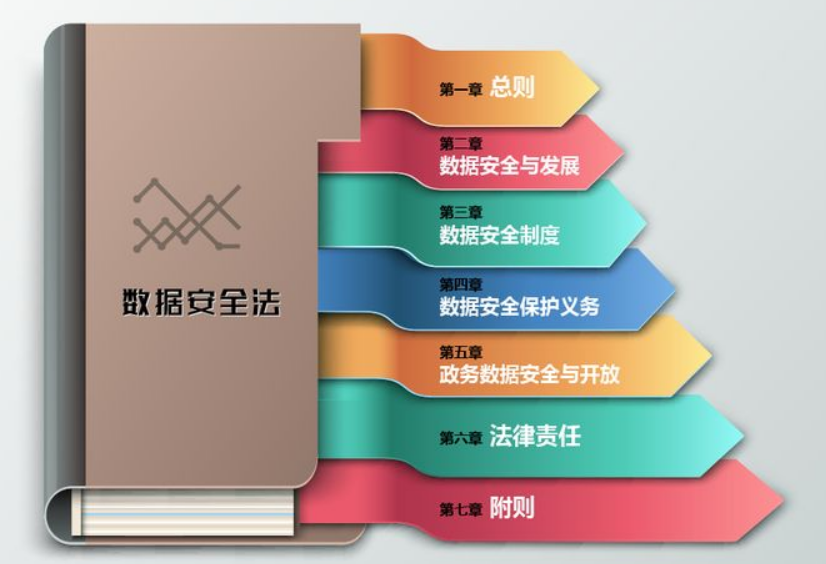
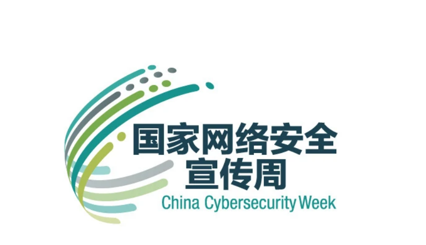
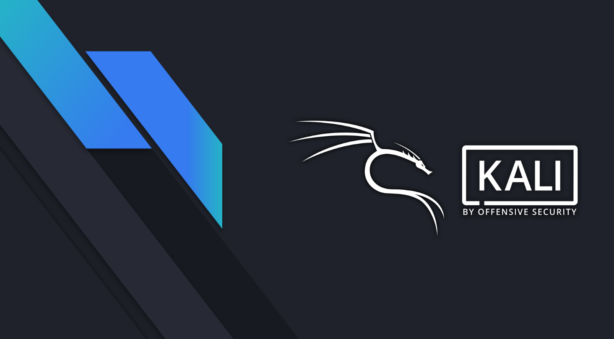

day1-网络安全概念（上午）
前言
受邀需要做一场为期七天的网络安全现场培训，经过自己的梳理，根据整个课程大纲来制作这一次培训的课件。旨在提高人员的安全水平，对网络安全能够有进一步的认知。（该系列（自制课件）的课件内容均为个人原创）
网络安全政策法规简介
随着全球网络空间威胁态势变得更加复杂和严峻，网络安全已稳步上升到全球各国政府的议程，成为数字时代全球政府治理的核心议题之一。
习主席曾说： 没有网络安全就没有国家安全。今年是《中华人民共和国网络安全法》施行五周年。一直以来，习主席高度重视网络安全和信息化工作，敏锐把握信息时代“时”与“势”，多次在不同场合就网络安全发表一系列重要论述，为维护国家网络安全，筑牢国家网络安全屏障奠定基石。
简单列举一下一些 国内施行的政策：
2016年11月7日，第十二届全国人民代表大会常务委员会第二十四次会议通过《中华人民共和国网络安全法》，自2017年6月1日起施行。《中华人民共和国网络安全法》是为了保障网络安全，维护网络空间主权和国家安全、社会公共利益，保护公民、法人和其他组织的合法权益，促进经济社会信息化健康发展，制定的法规。

2021年施行《数据安全法》、《个人信息保护法》等几部重磅法律落地实施。

国家网络安全宣传周，以“共建网络安全，共享网络文明”为主题。围绕金融、电信、电子政务、电子商务等重点领域和行业网络安全问题，针对社会公众关注的热点问题，举办网络安全体验展等系列主题宣传活动，营造网络安全人人有责、人人参与的良好氛围。
每年9月第三周，第一届 2014年

网络安全概念
随着计算机技术的飞速发展，信息网络已经成为社会发展的重要保证。有很多是敏感信息，甚至是国家机密。所以难免会吸引来自世界各地的各种人为攻击（例如信息泄露、信息窃取、数据篡改、数据删添、计算机病毒等）。同时，网络实体还要经受诸如水灾、火灾、地震、电磁辐射等方面的考验。
网络安全（Cyber Security）是指网络系统的硬件、软件及其系统中的数据受到保护，不因偶然的或者恶意的原因而遭受到破坏、更改、泄露，系统连续可靠正常地运行，网络服务不中断。
网络安全，通常指计算机网络的安全，实际上也可以指计算机通信网络的安全。计算机通信网络是将若干台具有独立功能的计算机通过通信设备及传输媒体互连起来，在通信软件的支持下，实现计算机间的信息传输与交换的系统。而计算机网络是指以共享资源为目的，利用通信手段把地域上相对分散的若干独立的计算机系统、终端设备和数据设备连接起来，并在协议的控制下进行数据交换的系统。
计算机网络的根本目的在于资源共享，通信网络是实现网络资源共享的途径，因此，计算机网络是安全的，相应的计算机通信网络也必须是安全的，应该能为网络用户实现信息交换与资源共享。下文中，网络安全既指计算机网络安全，又指计算机通信网络安全。
安全的基本含义：客观上不存在威胁，主观上不存在恐惧。即客体不担心其正常状态受到影响。可以把网络安全定义为：一个网络系统不受任何威胁与侵害，能正常地实现资源共享功能。要使网络能正常地实现资源共享功能，首先要保证网络的硬件、软件能正常运行，然后要保证数据信息交换的安全。从前面两节可以看到，由于资源共享的滥用，导致了网络的安全问题。因此网络安全的技术途径就是要实行有限制的共享。
问：？
张三网上自学了一些黑客技术，在夜深人静的时候，对某单位进行攻击。是否属于违法犯罪。
渗透测试概念
什么是渗透测试？
渗透测试是通过模拟恶意黑客的攻击方法，来评估计算机网络系统安全的一种评估方法。这个过程包括对系统的任何弱点、技术缺陷或漏洞的主动分析，这个分析是从一个攻击者可能存在的位置来进行的，并且从这个位置有条件主动利用安全漏洞。
换句话来说，渗透测试是指渗透人员在不同的位置（比如从内网、从外网等位置）利用各种手段对某个特定网络进行测试，以期发现和挖掘系统中存在的漏洞，然后输出渗透测试报告，并提交给网络所有者。网络所有者根据渗透人员提供的渗透测试报告，可以清晰知晓系统中存在的安全隐患和问题。

为什么要进行渗透测试？
1.技术性验证/检查安全隐患
有效的主动性防御手段，技术性验证目标系统的安全性，查找系统的安全隐患。
2.合规、评估的基本要求
渗透测试是安全规范和法律的基本要求，如等级保护、风险评估、PCI认证中均要求进行渗透性测试。
3.单位形象/经济规避
渗透测试可帮助企业因安全问题带来的单位形象的损失和经济损失的风险，提高客户的操作安全性或满足业务合作伙伴的要求。最终的目标应该是最大限度地减小业务风险。
4.安全教育与技能提升
渗透测试的结果可作为内部安全意识的案例，在对相关的接口人员进行安全教育时使用。一份专业的渗透测试报告不但可为用户提供作为案例，更可作为常见安全原理的学习参考。